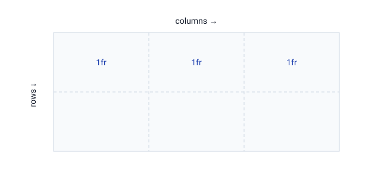

1. Що таке CSS Grid
Grid — двовимірна система розкладки: керує рядками і стовпцями одночасно. Найкраще підходить для складних макетів сторінки й сіток карток.

.container {
display: grid;
grid-template-columns: 1fr 1fr 1fr; /* 3 рівні стовпці */
gap: 16px;
}2. Одиниця fr та repeat
fr — частка вільного простору. repeat() скорочує повтори.
grid-template-columns: repeat(3, 1fr); /* 3 рівні */
grid-template-columns: 200px 1fr; /* фіксований + гнучкий */
grid-template-columns: repeat(4, 1fr);
grid-template-rows: auto 1fr auto;3. Адаптивна сітка без media queries
Комбінація auto-fill/auto-fit із minmax сама
переносить картки залежно від ширини.
.gallery {
display: grid;
grid-template-columns: repeat(auto-fit, minmax(200px, 1fr));
gap: 20px;
}
Цей один рядок repeat(auto-fit, minmax(200px, 1fr)) робить повністю
адаптивну сітку карток — кількість стовпців змінюється сама. Один із найкорисніших
прийомів сучасного CSS.
4. Розміщення елементів
.featured {
grid-column: 1 / 3; /* зайняти стовпці з 1 по 3 */
grid-row: 1 / 2;
}
/* або через span */
.wide { grid-column: span 2; }5. Grid чи Flexbox?
- Flexbox — коли елементи в одну лінію (меню, ряд кнопок);
- Grid — коли потрібні і рядки, і стовпці (макет сторінки, галерея).
Їх часто поєднують: Grid для загального макета, Flexbox — усередині блоків.